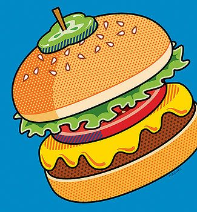
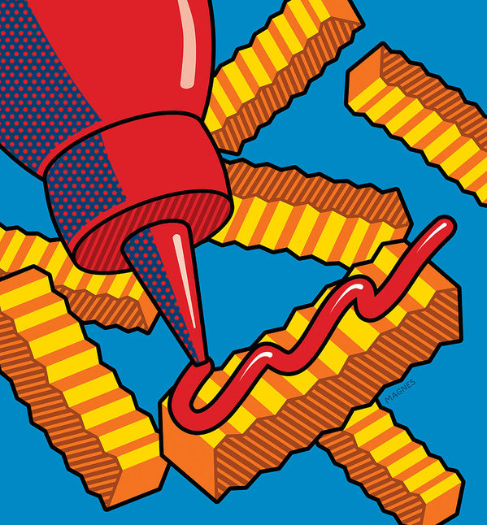

돌아가기
HTML연습
대제목
중제목
소제목
상세
중제목2
한가지 주제에 대하여
하나의 문단으로 표현합니다.
주제가 달라지면 다른 문단을 사용합니다.
- 물을 끓인다
- 라면을 넣는다
- 먹는다
- odered list 순차 목록
- 순서에 영향을 많이 받는 목록을 이야기 합니다.
- odered list 비순차 목록
- 순서에 영향을 받지않는 목록을 이야기 합니다.
강한 강조
강조
볼드체
이탤릭체
추가하고 싶은 말
쓸모없는 정보다 관계없는 정보
밑줄 형태
가운데줄 형태
22 :2의 2제곱
H20 :물에 대한 화학식
버튼


[도표1] 도표제목
| 제목1 |
제목2 |
제목3 |
제목4 |
제목5 |
| 1 |
2 |
3 |
4 |
| 5 |
6 |
7 |
8 |
| up |
right |
| left |
center |
| down |